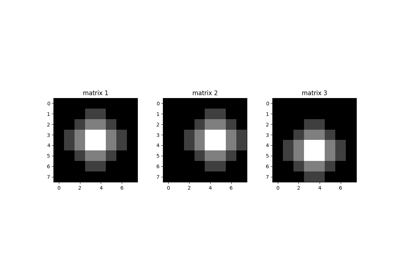
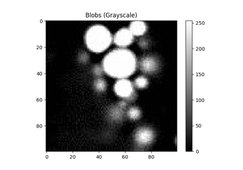
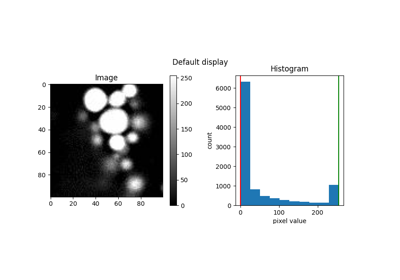
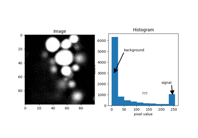
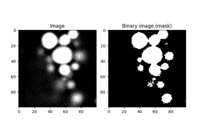
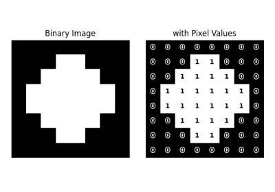
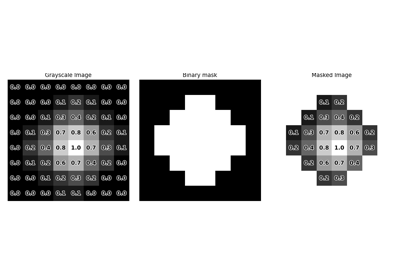

Topics covered to understand basic image processing

What is an image

Single-Channel Image

Brightness and Contrast

Thresholding

Binary Image

Binary Image Operations

Extracting Information (Masking)
Extracting Information (Masking)